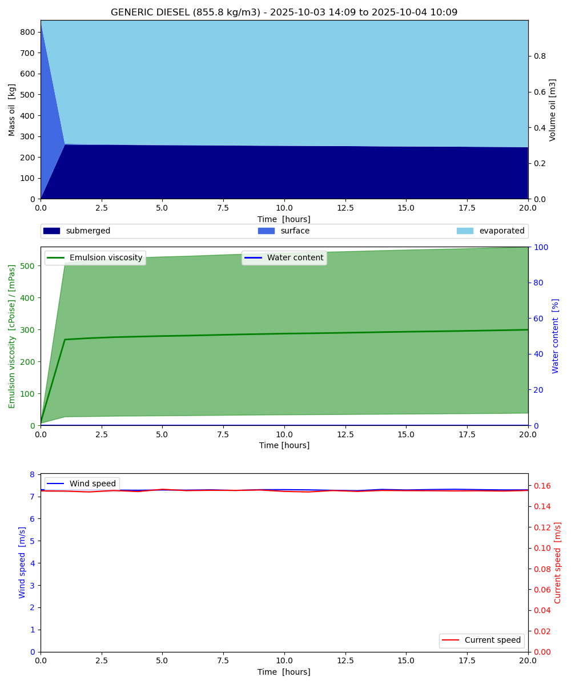

Note
Go to the end to download the full example code.
Oil film thickness
from datetime import datetime, timedelta
import matplotlib.pyplot as plt
import numpy as np
from opendrift.models.openoil import OpenOil
number = 10000
timestep = timedelta(minutes=10)
timestep_output = timedelta(minutes=60)
duration = timedelta(hours=20)
mass_oil = 2000 # mass oil per particle
oil_type = 'GENERIC DIESEL'
#oil_type = 'GENERIC BUNKER C'
First run, where surface oil thickness is updated
o1 = OpenOil(loglevel=20, weathering_model='noaa')
14:29:53 INFO opendrift:568: OpenDriftSimulation initialised (version 1.14.2 / v1.14.2-126-g503cd4e)
Northwards wind, eastwards current
o1.set_config('environment:fallback:land_binary_mask', 0)
o1.set_config('environment:fallback:x_wind', 0)
o1.set_config('environment:fallback:y_wind', 7)
o1.set_config('environment:fallback:sea_surface_wave_stokes_drift_x_velocity', 0)
o1.set_config('environment:fallback:sea_surface_wave_stokes_drift_y_velocity', .3)
o1.set_config('environment:fallback:x_sea_water_velocity', .1)
o1.set_config('environment:fallback:y_sea_water_velocity', 0)
Using Johansen droplet spectrum, which depends on oil film thickness
o1.set_config('wave_entrainment:droplet_size_distribution',
'Johansen et al. (2015)')
o1.set_config('drift:wind_uncertainty', 2)
o1.set_config('drift:current_uncertainty', .1)
o1.set_config('processes:dispersion', False)
o1.set_config('processes:update_oilfilm_thickness', True)
o1.seed_elements(lon=4.5, lat=60, number=number,
mass_oil=mass_oil, radius=1000,
oil_type=oil_type,
time=datetime.now())
o1.run(time_step=timestep, time_step_output=timestep_output,
duration=duration)
14:29:53 INFO opendrift.models.openoil.adios.dirjs:86: Querying ADIOS database for oil: GENERIC DIESEL
14:29:53 INFO opendrift.models.openoil.openoil:1717: Using density 855.84763 and viscosity 8.644570579524623e-06 of oiltype GENERIC DIESEL
14:29:53 INFO opendrift.models.basemodel.environment:206: Adding a global landmask from GSHHG
14:29:59 INFO opendrift.models.basemodel.environment:229: Fallback values will be used for the following variables which have no readers:
14:29:59 INFO opendrift.models.basemodel.environment:232: x_sea_water_velocity: 0.100000
14:29:59 INFO opendrift.models.basemodel.environment:232: y_sea_water_velocity: 0.000000
14:29:59 INFO opendrift.models.basemodel.environment:232: x_wind: 0.000000
14:29:59 INFO opendrift.models.basemodel.environment:232: y_wind: 7.000000
14:29:59 INFO opendrift.models.basemodel.environment:232: sea_surface_height: 0.000000
14:29:59 INFO opendrift.models.basemodel.environment:232: upward_sea_water_velocity: 0.000000
14:29:59 INFO opendrift.models.basemodel.environment:232: sea_surface_wave_significant_height: 0.000000
14:29:59 INFO opendrift.models.basemodel.environment:232: sea_surface_wave_stokes_drift_x_velocity: 0.000000
14:29:59 INFO opendrift.models.basemodel.environment:232: sea_surface_wave_stokes_drift_y_velocity: 0.300000
14:29:59 INFO opendrift.models.basemodel.environment:232: sea_surface_wave_period_at_variance_spectral_density_maximum: 0.000000
14:29:59 INFO opendrift.models.basemodel.environment:232: sea_surface_wave_mean_period_from_variance_spectral_density_second_frequency_moment: 0.000000
14:29:59 INFO opendrift.models.basemodel.environment:232: sea_ice_area_fraction: 0.000000
14:29:59 INFO opendrift.models.basemodel.environment:232: sea_ice_x_velocity: 0.000000
14:29:59 INFO opendrift.models.basemodel.environment:232: sea_ice_y_velocity: 0.000000
14:29:59 INFO opendrift.models.basemodel.environment:232: sea_water_temperature: 10.000000
14:29:59 INFO opendrift.models.basemodel.environment:232: sea_water_salinity: 34.000000
14:29:59 INFO opendrift.models.basemodel.environment:232: sea_floor_depth_below_sea_level: 10000.000000
14:29:59 INFO opendrift.models.basemodel.environment:232: ocean_vertical_diffusivity: 0.020000
14:29:59 INFO opendrift.models.basemodel.environment:232: ocean_mixed_layer_thickness: 50.000000
14:29:59 INFO opendrift:1778: Skipping environment variable upward_sea_water_velocity because of condition ['drift:vertical_advection', 'is', False]
14:29:59 INFO opendrift:1789: Storing previous values of element property lon because of condition (('general:coastline_action', 'in', ['stranding', 'previous']), 'or', ('general:seafloor_action', 'in', ['previous']))
14:29:59 INFO opendrift:1789: Storing previous values of element property lat because of condition (('general:coastline_action', 'in', ['stranding', 'previous']), 'or', ('general:seafloor_action', 'in', ['previous']))
14:29:59 INFO opendrift:944: Using existing reader for land_binary_mask to move elements to ocean
14:29:59 INFO opendrift:974: All points are in ocean
14:29:59 INFO opendrift.models.openoil.openoil:692: Oil-water surface tension is 0.030314 Nm
14:29:59 INFO opendrift.models.openoil.openoil:705: Max water fraction not available for GENERIC DIESEL, using default
14:29:59 INFO opendrift:2085: 2025-08-27 14:29:53.808971 - step 1 of 120 - 10000 active elements (0 deactivated)
14:30:00 INFO opendrift:2085: 2025-08-27 14:39:53.808971 - step 2 of 120 - 10000 active elements (0 deactivated)
14:30:00 INFO opendrift:2085: 2025-08-27 14:49:53.808971 - step 3 of 120 - 10000 active elements (0 deactivated)
14:30:01 INFO opendrift:2085: 2025-08-27 14:59:53.808971 - step 4 of 120 - 10000 active elements (0 deactivated)
14:30:01 INFO opendrift:2085: 2025-08-27 15:09:53.808971 - step 5 of 120 - 10000 active elements (0 deactivated)
14:30:01 INFO opendrift:2085: 2025-08-27 15:19:53.808971 - step 6 of 120 - 10000 active elements (0 deactivated)
14:30:02 INFO opendrift:2085: 2025-08-27 15:29:53.808971 - step 7 of 120 - 10000 active elements (0 deactivated)
14:30:02 INFO opendrift:2085: 2025-08-27 15:39:53.808971 - step 8 of 120 - 10000 active elements (0 deactivated)
14:30:02 INFO opendrift:2085: 2025-08-27 15:49:53.808971 - step 9 of 120 - 10000 active elements (0 deactivated)
14:30:02 INFO opendrift:2085: 2025-08-27 15:59:53.808971 - step 10 of 120 - 10000 active elements (0 deactivated)
14:30:02 INFO opendrift:2085: 2025-08-27 16:09:53.808971 - step 11 of 120 - 10000 active elements (0 deactivated)
14:30:03 INFO opendrift:2085: 2025-08-27 16:19:53.808971 - step 12 of 120 - 10000 active elements (0 deactivated)
14:30:03 INFO opendrift:2085: 2025-08-27 16:29:53.808971 - step 13 of 120 - 10000 active elements (0 deactivated)
14:30:03 INFO opendrift:2085: 2025-08-27 16:39:53.808971 - step 14 of 120 - 10000 active elements (0 deactivated)
14:30:03 INFO opendrift:2085: 2025-08-27 16:49:53.808971 - step 15 of 120 - 10000 active elements (0 deactivated)
14:30:04 INFO opendrift:2085: 2025-08-27 16:59:53.808971 - step 16 of 120 - 10000 active elements (0 deactivated)
14:30:04 INFO opendrift:2085: 2025-08-27 17:09:53.808971 - step 17 of 120 - 10000 active elements (0 deactivated)
14:30:04 INFO opendrift:2085: 2025-08-27 17:19:53.808971 - step 18 of 120 - 10000 active elements (0 deactivated)
14:30:04 INFO opendrift:2085: 2025-08-27 17:29:53.808971 - step 19 of 120 - 10000 active elements (0 deactivated)
14:30:05 INFO opendrift:2085: 2025-08-27 17:39:53.808971 - step 20 of 120 - 10000 active elements (0 deactivated)
14:30:05 INFO opendrift:2085: 2025-08-27 17:49:53.808971 - step 21 of 120 - 10000 active elements (0 deactivated)
14:30:05 INFO opendrift:2085: 2025-08-27 17:59:53.808971 - step 22 of 120 - 10000 active elements (0 deactivated)
14:30:05 INFO opendrift:2085: 2025-08-27 18:09:53.808971 - step 23 of 120 - 10000 active elements (0 deactivated)
14:30:06 INFO opendrift:2085: 2025-08-27 18:19:53.808971 - step 24 of 120 - 10000 active elements (0 deactivated)
14:30:06 INFO opendrift:2085: 2025-08-27 18:29:53.808971 - step 25 of 120 - 10000 active elements (0 deactivated)
14:30:06 INFO opendrift:2085: 2025-08-27 18:39:53.808971 - step 26 of 120 - 10000 active elements (0 deactivated)
14:30:07 INFO opendrift:2085: 2025-08-27 18:49:53.808971 - step 27 of 120 - 10000 active elements (0 deactivated)
14:30:07 INFO opendrift:2085: 2025-08-27 18:59:53.808971 - step 28 of 120 - 10000 active elements (0 deactivated)
14:30:07 INFO opendrift:2085: 2025-08-27 19:09:53.808971 - step 29 of 120 - 10000 active elements (0 deactivated)
14:30:07 INFO opendrift:2085: 2025-08-27 19:19:53.808971 - step 30 of 120 - 10000 active elements (0 deactivated)
14:30:07 INFO opendrift:2085: 2025-08-27 19:29:53.808971 - step 31 of 120 - 10000 active elements (0 deactivated)
14:30:08 INFO opendrift:2085: 2025-08-27 19:39:53.808971 - step 32 of 120 - 10000 active elements (0 deactivated)
14:30:08 INFO opendrift:2085: 2025-08-27 19:49:53.808971 - step 33 of 120 - 10000 active elements (0 deactivated)
14:30:08 INFO opendrift:2085: 2025-08-27 19:59:53.808971 - step 34 of 120 - 10000 active elements (0 deactivated)
14:30:08 INFO opendrift:2085: 2025-08-27 20:09:53.808971 - step 35 of 120 - 10000 active elements (0 deactivated)
14:30:09 INFO opendrift:2085: 2025-08-27 20:19:53.808971 - step 36 of 120 - 10000 active elements (0 deactivated)
14:30:09 INFO opendrift:2085: 2025-08-27 20:29:53.808971 - step 37 of 120 - 10000 active elements (0 deactivated)
14:30:09 INFO opendrift:2085: 2025-08-27 20:39:53.808971 - step 38 of 120 - 10000 active elements (0 deactivated)
14:30:09 INFO opendrift:2085: 2025-08-27 20:49:53.808971 - step 39 of 120 - 10000 active elements (0 deactivated)
14:30:10 INFO opendrift:2085: 2025-08-27 20:59:53.808971 - step 40 of 120 - 10000 active elements (0 deactivated)
14:30:10 INFO opendrift:2085: 2025-08-27 21:09:53.808971 - step 41 of 120 - 10000 active elements (0 deactivated)
14:30:10 INFO opendrift:2085: 2025-08-27 21:19:53.808971 - step 42 of 120 - 10000 active elements (0 deactivated)
14:30:10 INFO opendrift:2085: 2025-08-27 21:29:53.808971 - step 43 of 120 - 10000 active elements (0 deactivated)
14:30:11 INFO opendrift:2085: 2025-08-27 21:39:53.808971 - step 44 of 120 - 10000 active elements (0 deactivated)
14:30:11 INFO opendrift:2085: 2025-08-27 21:49:53.808971 - step 45 of 120 - 10000 active elements (0 deactivated)
14:30:11 INFO opendrift:2085: 2025-08-27 21:59:53.808971 - step 46 of 120 - 10000 active elements (0 deactivated)
14:30:11 INFO opendrift:2085: 2025-08-27 22:09:53.808971 - step 47 of 120 - 10000 active elements (0 deactivated)
14:30:12 INFO opendrift:2085: 2025-08-27 22:19:53.808971 - step 48 of 120 - 10000 active elements (0 deactivated)
14:30:12 INFO opendrift:2085: 2025-08-27 22:29:53.808971 - step 49 of 120 - 10000 active elements (0 deactivated)
14:30:12 INFO opendrift:2085: 2025-08-27 22:39:53.808971 - step 50 of 120 - 10000 active elements (0 deactivated)
14:30:12 INFO opendrift:2085: 2025-08-27 22:49:53.808971 - step 51 of 120 - 10000 active elements (0 deactivated)
14:30:13 INFO opendrift:2085: 2025-08-27 22:59:53.808971 - step 52 of 120 - 10000 active elements (0 deactivated)
14:30:13 INFO opendrift:2085: 2025-08-27 23:09:53.808971 - step 53 of 120 - 10000 active elements (0 deactivated)
14:30:13 INFO opendrift:2085: 2025-08-27 23:19:53.808971 - step 54 of 120 - 10000 active elements (0 deactivated)
14:30:13 INFO opendrift:2085: 2025-08-27 23:29:53.808971 - step 55 of 120 - 10000 active elements (0 deactivated)
14:30:13 INFO opendrift:2085: 2025-08-27 23:39:53.808971 - step 56 of 120 - 10000 active elements (0 deactivated)
14:30:14 INFO opendrift:2085: 2025-08-27 23:49:53.808971 - step 57 of 120 - 10000 active elements (0 deactivated)
14:30:14 INFO opendrift:2085: 2025-08-27 23:59:53.808971 - step 58 of 120 - 10000 active elements (0 deactivated)
14:30:14 INFO opendrift:2085: 2025-08-28 00:09:53.808971 - step 59 of 120 - 10000 active elements (0 deactivated)
14:30:14 INFO opendrift:2085: 2025-08-28 00:19:53.808971 - step 60 of 120 - 10000 active elements (0 deactivated)
14:30:15 INFO opendrift:2085: 2025-08-28 00:29:53.808971 - step 61 of 120 - 10000 active elements (0 deactivated)
14:30:15 INFO opendrift:2085: 2025-08-28 00:39:53.808971 - step 62 of 120 - 10000 active elements (0 deactivated)
14:30:15 INFO opendrift:2085: 2025-08-28 00:49:53.808971 - step 63 of 120 - 10000 active elements (0 deactivated)
14:30:15 INFO opendrift:2085: 2025-08-28 00:59:53.808971 - step 64 of 120 - 10000 active elements (0 deactivated)
14:30:16 INFO opendrift:2085: 2025-08-28 01:09:53.808971 - step 65 of 120 - 10000 active elements (0 deactivated)
14:30:16 INFO opendrift:2085: 2025-08-28 01:19:53.808971 - step 66 of 120 - 10000 active elements (0 deactivated)
14:30:16 INFO opendrift:2085: 2025-08-28 01:29:53.808971 - step 67 of 120 - 10000 active elements (0 deactivated)
14:30:16 INFO opendrift:2085: 2025-08-28 01:39:53.808971 - step 68 of 120 - 10000 active elements (0 deactivated)
14:30:17 INFO opendrift:2085: 2025-08-28 01:49:53.808971 - step 69 of 120 - 10000 active elements (0 deactivated)
14:30:17 INFO opendrift:2085: 2025-08-28 01:59:53.808971 - step 70 of 120 - 10000 active elements (0 deactivated)
14:30:17 INFO opendrift:2085: 2025-08-28 02:09:53.808971 - step 71 of 120 - 10000 active elements (0 deactivated)
14:30:17 INFO opendrift:2085: 2025-08-28 02:19:53.808971 - step 72 of 120 - 10000 active elements (0 deactivated)
14:30:17 INFO opendrift:2085: 2025-08-28 02:29:53.808971 - step 73 of 120 - 10000 active elements (0 deactivated)
14:30:18 INFO opendrift:2085: 2025-08-28 02:39:53.808971 - step 74 of 120 - 10000 active elements (0 deactivated)
14:30:18 INFO opendrift:2085: 2025-08-28 02:49:53.808971 - step 75 of 120 - 10000 active elements (0 deactivated)
14:30:18 INFO opendrift:2085: 2025-08-28 02:59:53.808971 - step 76 of 120 - 10000 active elements (0 deactivated)
14:30:18 INFO opendrift:2085: 2025-08-28 03:09:53.808971 - step 77 of 120 - 10000 active elements (0 deactivated)
14:30:19 INFO opendrift:2085: 2025-08-28 03:19:53.808971 - step 78 of 120 - 10000 active elements (0 deactivated)
14:30:19 INFO opendrift:2085: 2025-08-28 03:29:53.808971 - step 79 of 120 - 10000 active elements (0 deactivated)
14:30:19 INFO opendrift:2085: 2025-08-28 03:39:53.808971 - step 80 of 120 - 10000 active elements (0 deactivated)
14:30:19 INFO opendrift:2085: 2025-08-28 03:49:53.808971 - step 81 of 120 - 10000 active elements (0 deactivated)
14:30:20 INFO opendrift:2085: 2025-08-28 03:59:53.808971 - step 82 of 120 - 10000 active elements (0 deactivated)
14:30:20 INFO opendrift:2085: 2025-08-28 04:09:53.808971 - step 83 of 120 - 10000 active elements (0 deactivated)
14:30:20 INFO opendrift:2085: 2025-08-28 04:19:53.808971 - step 84 of 120 - 10000 active elements (0 deactivated)
14:30:20 INFO opendrift:2085: 2025-08-28 04:29:53.808971 - step 85 of 120 - 10000 active elements (0 deactivated)
14:30:21 INFO opendrift:2085: 2025-08-28 04:39:53.808971 - step 86 of 120 - 10000 active elements (0 deactivated)
14:30:21 INFO opendrift:2085: 2025-08-28 04:49:53.808971 - step 87 of 120 - 10000 active elements (0 deactivated)
14:30:21 INFO opendrift:2085: 2025-08-28 04:59:53.808971 - step 88 of 120 - 10000 active elements (0 deactivated)
14:30:21 INFO opendrift:2085: 2025-08-28 05:09:53.808971 - step 89 of 120 - 10000 active elements (0 deactivated)
14:30:21 INFO opendrift:2085: 2025-08-28 05:19:53.808971 - step 90 of 120 - 10000 active elements (0 deactivated)
14:30:22 INFO opendrift:2085: 2025-08-28 05:29:53.808971 - step 91 of 120 - 10000 active elements (0 deactivated)
14:30:22 INFO opendrift:2085: 2025-08-28 05:39:53.808971 - step 92 of 120 - 10000 active elements (0 deactivated)
14:30:22 INFO opendrift:2085: 2025-08-28 05:49:53.808971 - step 93 of 120 - 10000 active elements (0 deactivated)
14:30:22 INFO opendrift:2085: 2025-08-28 05:59:53.808971 - step 94 of 120 - 10000 active elements (0 deactivated)
14:30:23 INFO opendrift:2085: 2025-08-28 06:09:53.808971 - step 95 of 120 - 10000 active elements (0 deactivated)
14:30:23 INFO opendrift:2085: 2025-08-28 06:19:53.808971 - step 96 of 120 - 10000 active elements (0 deactivated)
14:30:23 INFO opendrift:2085: 2025-08-28 06:29:53.808971 - step 97 of 120 - 10000 active elements (0 deactivated)
14:30:23 INFO opendrift:2085: 2025-08-28 06:39:53.808971 - step 98 of 120 - 10000 active elements (0 deactivated)
14:30:24 INFO opendrift:2085: 2025-08-28 06:49:53.808971 - step 99 of 120 - 10000 active elements (0 deactivated)
14:30:24 INFO opendrift:2085: 2025-08-28 06:59:53.808971 - step 100 of 120 - 10000 active elements (0 deactivated)
14:30:24 INFO opendrift:2085: 2025-08-28 07:09:53.808971 - step 101 of 120 - 10000 active elements (0 deactivated)
14:30:24 INFO opendrift:2085: 2025-08-28 07:19:53.808971 - step 102 of 120 - 10000 active elements (0 deactivated)
14:30:24 INFO opendrift:2085: 2025-08-28 07:29:53.808971 - step 103 of 120 - 10000 active elements (0 deactivated)
14:30:25 INFO opendrift:2085: 2025-08-28 07:39:53.808971 - step 104 of 120 - 10000 active elements (0 deactivated)
14:30:25 INFO opendrift:2085: 2025-08-28 07:49:53.808971 - step 105 of 120 - 10000 active elements (0 deactivated)
14:30:25 INFO opendrift:2085: 2025-08-28 07:59:53.808971 - step 106 of 120 - 10000 active elements (0 deactivated)
14:30:25 INFO opendrift:2085: 2025-08-28 08:09:53.808971 - step 107 of 120 - 10000 active elements (0 deactivated)
14:30:26 INFO opendrift:2085: 2025-08-28 08:19:53.808971 - step 108 of 120 - 10000 active elements (0 deactivated)
14:30:26 INFO opendrift:2085: 2025-08-28 08:29:53.808971 - step 109 of 120 - 10000 active elements (0 deactivated)
14:30:26 INFO opendrift:2085: 2025-08-28 08:39:53.808971 - step 110 of 120 - 10000 active elements (0 deactivated)
14:30:26 INFO opendrift:2085: 2025-08-28 08:49:53.808971 - step 111 of 120 - 10000 active elements (0 deactivated)
14:30:26 INFO opendrift:2085: 2025-08-28 08:59:53.808971 - step 112 of 120 - 10000 active elements (0 deactivated)
14:30:27 INFO opendrift:2085: 2025-08-28 09:09:53.808971 - step 113 of 120 - 10000 active elements (0 deactivated)
14:30:27 INFO opendrift:2085: 2025-08-28 09:19:53.808971 - step 114 of 120 - 10000 active elements (0 deactivated)
14:30:27 INFO opendrift:2085: 2025-08-28 09:29:53.808971 - step 115 of 120 - 10000 active elements (0 deactivated)
14:30:27 INFO opendrift:2085: 2025-08-28 09:39:53.808971 - step 116 of 120 - 10000 active elements (0 deactivated)
14:30:28 INFO opendrift:2085: 2025-08-28 09:49:53.808971 - step 117 of 120 - 10000 active elements (0 deactivated)
14:30:28 INFO opendrift:2085: 2025-08-28 09:59:53.808971 - step 118 of 120 - 10000 active elements (0 deactivated)
14:30:28 INFO opendrift:2085: 2025-08-28 10:09:53.808971 - step 119 of 120 - 10000 active elements (0 deactivated)
14:30:28 INFO opendrift:2085: 2025-08-28 10:19:53.808971 - step 120 of 120 - 10000 active elements (0 deactivated)
Animation shows how oil thickness evolves, and decreases due to evaporation and spreading
unitfactor=1e6 # show film thickness in micrometers
o1.animation(color='oil_film_thickness', fast=True,
vmin=1e-7*unitfactor, vmax=1e-4*unitfactor,
unitfactor=unitfactor, surface_only=True)
14:30:29 WARNING opendrift:2441: Plotting fast. This will make your plots less accurate.
14:30:31 INFO opendrift:4609: Saving animation to /root/project/docs/source/gallery/animations/example_oil_thickness_0.gif...
14:30:54 INFO opendrift:3050: Time to make animation: 0:00:25.659539

Second run, identical but without updating surface oil thickness
o2 = OpenOil(loglevel=20, weathering_model='noaa')
o2.set_config('environment:fallback:land_binary_mask', 0)
o2.set_config('environment:fallback:x_wind', 0)
o2.set_config('environment:fallback:y_wind', 7)
o2.set_config('environment:fallback:sea_surface_wave_stokes_drift_x_velocity', 0)
o2.set_config('environment:fallback:sea_surface_wave_stokes_drift_y_velocity', .3)
o2.set_config('environment:fallback:x_sea_water_velocity', .1)
o2.set_config('environment:fallback:y_sea_water_velocity', 0)
o2.set_config('wave_entrainment:droplet_size_distribution',
'Johansen et al. (2015)')
o2.set_config('drift:wind_uncertainty', 2)
o2.set_config('drift:current_uncertainty', .1)
o2.set_config('processes:dispersion', False)
o2.set_config('processes:update_oilfilm_thickness', False)
o2.seed_elements(lon=4.5, lat=60, number=number,
mass_oil=mass_oil, radius=1000,
oil_type=oil_type,
time=datetime.now())
o2.run(time_step=timestep, time_step_output=timestep_output,
duration=duration)
14:30:54 INFO opendrift:568: OpenDriftSimulation initialised (version 1.14.2 / v1.14.2-126-g503cd4e)
14:30:55 INFO opendrift.models.openoil.adios.dirjs:86: Querying ADIOS database for oil: GENERIC DIESEL
14:30:55 INFO opendrift.models.openoil.openoil:1717: Using density 855.84763 and viscosity 8.644570579524623e-06 of oiltype GENERIC DIESEL
14:30:55 INFO opendrift.models.basemodel.environment:206: Adding a global landmask from GSHHG
14:30:55 INFO opendrift.models.basemodel.environment:229: Fallback values will be used for the following variables which have no readers:
14:30:55 INFO opendrift.models.basemodel.environment:232: x_sea_water_velocity: 0.100000
14:30:55 INFO opendrift.models.basemodel.environment:232: y_sea_water_velocity: 0.000000
14:30:55 INFO opendrift.models.basemodel.environment:232: x_wind: 0.000000
14:30:55 INFO opendrift.models.basemodel.environment:232: y_wind: 7.000000
14:30:55 INFO opendrift.models.basemodel.environment:232: sea_surface_height: 0.000000
14:30:55 INFO opendrift.models.basemodel.environment:232: upward_sea_water_velocity: 0.000000
14:30:55 INFO opendrift.models.basemodel.environment:232: sea_surface_wave_significant_height: 0.000000
14:30:55 INFO opendrift.models.basemodel.environment:232: sea_surface_wave_stokes_drift_x_velocity: 0.000000
14:30:55 INFO opendrift.models.basemodel.environment:232: sea_surface_wave_stokes_drift_y_velocity: 0.300000
14:30:55 INFO opendrift.models.basemodel.environment:232: sea_surface_wave_period_at_variance_spectral_density_maximum: 0.000000
14:30:55 INFO opendrift.models.basemodel.environment:232: sea_surface_wave_mean_period_from_variance_spectral_density_second_frequency_moment: 0.000000
14:30:55 INFO opendrift.models.basemodel.environment:232: sea_ice_area_fraction: 0.000000
14:30:55 INFO opendrift.models.basemodel.environment:232: sea_ice_x_velocity: 0.000000
14:30:55 INFO opendrift.models.basemodel.environment:232: sea_ice_y_velocity: 0.000000
14:30:55 INFO opendrift.models.basemodel.environment:232: sea_water_temperature: 10.000000
14:30:55 INFO opendrift.models.basemodel.environment:232: sea_water_salinity: 34.000000
14:30:55 INFO opendrift.models.basemodel.environment:232: sea_floor_depth_below_sea_level: 10000.000000
14:30:55 INFO opendrift.models.basemodel.environment:232: ocean_vertical_diffusivity: 0.020000
14:30:55 INFO opendrift.models.basemodel.environment:232: ocean_mixed_layer_thickness: 50.000000
14:30:55 INFO opendrift:1778: Skipping environment variable upward_sea_water_velocity because of condition ['drift:vertical_advection', 'is', False]
14:30:55 INFO opendrift:1789: Storing previous values of element property lon because of condition (('general:coastline_action', 'in', ['stranding', 'previous']), 'or', ('general:seafloor_action', 'in', ['previous']))
14:30:55 INFO opendrift:1789: Storing previous values of element property lat because of condition (('general:coastline_action', 'in', ['stranding', 'previous']), 'or', ('general:seafloor_action', 'in', ['previous']))
14:30:55 INFO opendrift:944: Using existing reader for land_binary_mask to move elements to ocean
14:30:55 INFO opendrift:974: All points are in ocean
14:30:55 INFO opendrift.models.openoil.openoil:692: Oil-water surface tension is 0.030314 Nm
14:30:55 INFO opendrift.models.openoil.openoil:705: Max water fraction not available for GENERIC DIESEL, using default
14:30:55 INFO opendrift:2085: 2025-08-27 14:30:55.000044 - step 1 of 120 - 10000 active elements (0 deactivated)
14:30:55 INFO opendrift:2085: 2025-08-27 14:40:55.000044 - step 2 of 120 - 10000 active elements (0 deactivated)
14:30:56 INFO opendrift:2085: 2025-08-27 14:50:55.000044 - step 3 of 120 - 10000 active elements (0 deactivated)
14:30:56 INFO opendrift:2085: 2025-08-27 15:00:55.000044 - step 4 of 120 - 10000 active elements (0 deactivated)
14:30:56 INFO opendrift:2085: 2025-08-27 15:10:55.000044 - step 5 of 120 - 10000 active elements (0 deactivated)
14:30:57 INFO opendrift:2085: 2025-08-27 15:20:55.000044 - step 6 of 120 - 10000 active elements (0 deactivated)
14:30:57 INFO opendrift:2085: 2025-08-27 15:30:55.000044 - step 7 of 120 - 10000 active elements (0 deactivated)
14:30:57 INFO opendrift:2085: 2025-08-27 15:40:55.000044 - step 8 of 120 - 10000 active elements (0 deactivated)
14:30:58 INFO opendrift:2085: 2025-08-27 15:50:55.000044 - step 9 of 120 - 10000 active elements (0 deactivated)
14:30:58 INFO opendrift:2085: 2025-08-27 16:00:55.000044 - step 10 of 120 - 10000 active elements (0 deactivated)
14:30:58 INFO opendrift:2085: 2025-08-27 16:10:55.000044 - step 11 of 120 - 10000 active elements (0 deactivated)
14:30:58 INFO opendrift:2085: 2025-08-27 16:20:55.000044 - step 12 of 120 - 10000 active elements (0 deactivated)
14:30:59 INFO opendrift:2085: 2025-08-27 16:30:55.000044 - step 13 of 120 - 10000 active elements (0 deactivated)
14:30:59 INFO opendrift:2085: 2025-08-27 16:40:55.000044 - step 14 of 120 - 10000 active elements (0 deactivated)
14:31:00 INFO opendrift:2085: 2025-08-27 16:50:55.000044 - step 15 of 120 - 10000 active elements (0 deactivated)
14:31:00 INFO opendrift:2085: 2025-08-27 17:00:55.000044 - step 16 of 120 - 10000 active elements (0 deactivated)
14:31:00 INFO opendrift:2085: 2025-08-27 17:10:55.000044 - step 17 of 120 - 10000 active elements (0 deactivated)
14:31:00 INFO opendrift:2085: 2025-08-27 17:20:55.000044 - step 18 of 120 - 10000 active elements (0 deactivated)
14:31:01 INFO opendrift:2085: 2025-08-27 17:30:55.000044 - step 19 of 120 - 10000 active elements (0 deactivated)
14:31:01 INFO opendrift:2085: 2025-08-27 17:40:55.000044 - step 20 of 120 - 10000 active elements (0 deactivated)
14:31:01 INFO opendrift:2085: 2025-08-27 17:50:55.000044 - step 21 of 120 - 10000 active elements (0 deactivated)
14:31:02 INFO opendrift:2085: 2025-08-27 18:00:55.000044 - step 22 of 120 - 10000 active elements (0 deactivated)
14:31:02 INFO opendrift:2085: 2025-08-27 18:10:55.000044 - step 23 of 120 - 10000 active elements (0 deactivated)
14:31:02 INFO opendrift:2085: 2025-08-27 18:20:55.000044 - step 24 of 120 - 10000 active elements (0 deactivated)
14:31:03 INFO opendrift:2085: 2025-08-27 18:30:55.000044 - step 25 of 120 - 10000 active elements (0 deactivated)
14:31:03 INFO opendrift:2085: 2025-08-27 18:40:55.000044 - step 26 of 120 - 10000 active elements (0 deactivated)
14:31:03 INFO opendrift:2085: 2025-08-27 18:50:55.000044 - step 27 of 120 - 10000 active elements (0 deactivated)
14:31:03 INFO opendrift:2085: 2025-08-27 19:00:55.000044 - step 28 of 120 - 10000 active elements (0 deactivated)
14:31:04 INFO opendrift:2085: 2025-08-27 19:10:55.000044 - step 29 of 120 - 10000 active elements (0 deactivated)
14:31:04 INFO opendrift:2085: 2025-08-27 19:20:55.000044 - step 30 of 120 - 10000 active elements (0 deactivated)
14:31:04 INFO opendrift:2085: 2025-08-27 19:30:55.000044 - step 31 of 120 - 10000 active elements (0 deactivated)
14:31:05 INFO opendrift:2085: 2025-08-27 19:40:55.000044 - step 32 of 120 - 10000 active elements (0 deactivated)
14:31:05 INFO opendrift:2085: 2025-08-27 19:50:55.000044 - step 33 of 120 - 10000 active elements (0 deactivated)
14:31:05 INFO opendrift:2085: 2025-08-27 20:00:55.000044 - step 34 of 120 - 10000 active elements (0 deactivated)
14:31:06 INFO opendrift:2085: 2025-08-27 20:10:55.000044 - step 35 of 120 - 10000 active elements (0 deactivated)
14:31:06 INFO opendrift:2085: 2025-08-27 20:20:55.000044 - step 36 of 120 - 10000 active elements (0 deactivated)
14:31:06 INFO opendrift:2085: 2025-08-27 20:30:55.000044 - step 37 of 120 - 10000 active elements (0 deactivated)
14:31:07 INFO opendrift:2085: 2025-08-27 20:40:55.000044 - step 38 of 120 - 10000 active elements (0 deactivated)
14:31:07 INFO opendrift:2085: 2025-08-27 20:50:55.000044 - step 39 of 120 - 10000 active elements (0 deactivated)
14:31:07 INFO opendrift:2085: 2025-08-27 21:00:55.000044 - step 40 of 120 - 10000 active elements (0 deactivated)
14:31:07 INFO opendrift:2085: 2025-08-27 21:10:55.000044 - step 41 of 120 - 10000 active elements (0 deactivated)
14:31:08 INFO opendrift:2085: 2025-08-27 21:20:55.000044 - step 42 of 120 - 10000 active elements (0 deactivated)
14:31:08 INFO opendrift:2085: 2025-08-27 21:30:55.000044 - step 43 of 120 - 10000 active elements (0 deactivated)
14:31:08 INFO opendrift:2085: 2025-08-27 21:40:55.000044 - step 44 of 120 - 10000 active elements (0 deactivated)
14:31:09 INFO opendrift:2085: 2025-08-27 21:50:55.000044 - step 45 of 120 - 10000 active elements (0 deactivated)
14:31:09 INFO opendrift:2085: 2025-08-27 22:00:55.000044 - step 46 of 120 - 10000 active elements (0 deactivated)
14:31:09 INFO opendrift:2085: 2025-08-27 22:10:55.000044 - step 47 of 120 - 10000 active elements (0 deactivated)
14:31:09 INFO opendrift:2085: 2025-08-27 22:20:55.000044 - step 48 of 120 - 10000 active elements (0 deactivated)
14:31:10 INFO opendrift:2085: 2025-08-27 22:30:55.000044 - step 49 of 120 - 10000 active elements (0 deactivated)
14:31:10 INFO opendrift:2085: 2025-08-27 22:40:55.000044 - step 50 of 120 - 10000 active elements (0 deactivated)
14:31:10 INFO opendrift:2085: 2025-08-27 22:50:55.000044 - step 51 of 120 - 10000 active elements (0 deactivated)
14:31:11 INFO opendrift:2085: 2025-08-27 23:00:55.000044 - step 52 of 120 - 10000 active elements (0 deactivated)
14:31:11 INFO opendrift:2085: 2025-08-27 23:10:55.000044 - step 53 of 120 - 10000 active elements (0 deactivated)
14:31:11 INFO opendrift:2085: 2025-08-27 23:20:55.000044 - step 54 of 120 - 10000 active elements (0 deactivated)
14:31:12 INFO opendrift:2085: 2025-08-27 23:30:55.000044 - step 55 of 120 - 10000 active elements (0 deactivated)
14:31:12 INFO opendrift:2085: 2025-08-27 23:40:55.000044 - step 56 of 120 - 10000 active elements (0 deactivated)
14:31:12 INFO opendrift:2085: 2025-08-27 23:50:55.000044 - step 57 of 120 - 10000 active elements (0 deactivated)
14:31:13 INFO opendrift:2085: 2025-08-28 00:00:55.000044 - step 58 of 120 - 10000 active elements (0 deactivated)
14:31:13 INFO opendrift:2085: 2025-08-28 00:10:55.000044 - step 59 of 120 - 10000 active elements (0 deactivated)
14:31:13 INFO opendrift:2085: 2025-08-28 00:20:55.000044 - step 60 of 120 - 10000 active elements (0 deactivated)
14:31:13 INFO opendrift:2085: 2025-08-28 00:30:55.000044 - step 61 of 120 - 10000 active elements (0 deactivated)
14:31:14 INFO opendrift:2085: 2025-08-28 00:40:55.000044 - step 62 of 120 - 10000 active elements (0 deactivated)
14:31:14 INFO opendrift:2085: 2025-08-28 00:50:55.000044 - step 63 of 120 - 10000 active elements (0 deactivated)
14:31:14 INFO opendrift:2085: 2025-08-28 01:00:55.000044 - step 64 of 120 - 10000 active elements (0 deactivated)
14:31:14 INFO opendrift:2085: 2025-08-28 01:10:55.000044 - step 65 of 120 - 10000 active elements (0 deactivated)
14:31:15 INFO opendrift:2085: 2025-08-28 01:20:55.000044 - step 66 of 120 - 10000 active elements (0 deactivated)
14:31:15 INFO opendrift:2085: 2025-08-28 01:30:55.000044 - step 67 of 120 - 10000 active elements (0 deactivated)
14:31:15 INFO opendrift:2085: 2025-08-28 01:40:55.000044 - step 68 of 120 - 10000 active elements (0 deactivated)
14:31:16 INFO opendrift:2085: 2025-08-28 01:50:55.000044 - step 69 of 120 - 10000 active elements (0 deactivated)
14:31:16 INFO opendrift:2085: 2025-08-28 02:00:55.000044 - step 70 of 120 - 10000 active elements (0 deactivated)
14:31:16 INFO opendrift:2085: 2025-08-28 02:10:55.000044 - step 71 of 120 - 10000 active elements (0 deactivated)
14:31:17 INFO opendrift:2085: 2025-08-28 02:20:55.000044 - step 72 of 120 - 10000 active elements (0 deactivated)
14:31:17 INFO opendrift:2085: 2025-08-28 02:30:55.000044 - step 73 of 120 - 10000 active elements (0 deactivated)
14:31:17 INFO opendrift:2085: 2025-08-28 02:40:55.000044 - step 74 of 120 - 10000 active elements (0 deactivated)
14:31:17 INFO opendrift:2085: 2025-08-28 02:50:55.000044 - step 75 of 120 - 10000 active elements (0 deactivated)
14:31:18 INFO opendrift:2085: 2025-08-28 03:00:55.000044 - step 76 of 120 - 10000 active elements (0 deactivated)
14:31:18 INFO opendrift:2085: 2025-08-28 03:10:55.000044 - step 77 of 120 - 10000 active elements (0 deactivated)
14:31:18 INFO opendrift:2085: 2025-08-28 03:20:55.000044 - step 78 of 120 - 10000 active elements (0 deactivated)
14:31:19 INFO opendrift:2085: 2025-08-28 03:30:55.000044 - step 79 of 120 - 10000 active elements (0 deactivated)
14:31:19 INFO opendrift:2085: 2025-08-28 03:40:55.000044 - step 80 of 120 - 10000 active elements (0 deactivated)
14:31:19 INFO opendrift:2085: 2025-08-28 03:50:55.000044 - step 81 of 120 - 10000 active elements (0 deactivated)
14:31:19 INFO opendrift:2085: 2025-08-28 04:00:55.000044 - step 82 of 120 - 10000 active elements (0 deactivated)
14:31:20 INFO opendrift:2085: 2025-08-28 04:10:55.000044 - step 83 of 120 - 10000 active elements (0 deactivated)
14:31:20 INFO opendrift:2085: 2025-08-28 04:20:55.000044 - step 84 of 120 - 10000 active elements (0 deactivated)
14:31:20 INFO opendrift:2085: 2025-08-28 04:30:55.000044 - step 85 of 120 - 10000 active elements (0 deactivated)
14:31:21 INFO opendrift:2085: 2025-08-28 04:40:55.000044 - step 86 of 120 - 10000 active elements (0 deactivated)
14:31:21 INFO opendrift:2085: 2025-08-28 04:50:55.000044 - step 87 of 120 - 10000 active elements (0 deactivated)
14:31:21 INFO opendrift:2085: 2025-08-28 05:00:55.000044 - step 88 of 120 - 10000 active elements (0 deactivated)
14:31:21 INFO opendrift:2085: 2025-08-28 05:10:55.000044 - step 89 of 120 - 10000 active elements (0 deactivated)
14:31:21 INFO opendrift:2085: 2025-08-28 05:20:55.000044 - step 90 of 120 - 10000 active elements (0 deactivated)
14:31:22 INFO opendrift:2085: 2025-08-28 05:30:55.000044 - step 91 of 120 - 10000 active elements (0 deactivated)
14:31:22 INFO opendrift:2085: 2025-08-28 05:40:55.000044 - step 92 of 120 - 10000 active elements (0 deactivated)
14:31:22 INFO opendrift:2085: 2025-08-28 05:50:55.000044 - step 93 of 120 - 10000 active elements (0 deactivated)
14:31:22 INFO opendrift:2085: 2025-08-28 06:00:55.000044 - step 94 of 120 - 10000 active elements (0 deactivated)
14:31:23 INFO opendrift:2085: 2025-08-28 06:10:55.000044 - step 95 of 120 - 10000 active elements (0 deactivated)
14:31:23 INFO opendrift:2085: 2025-08-28 06:20:55.000044 - step 96 of 120 - 10000 active elements (0 deactivated)
14:31:23 INFO opendrift:2085: 2025-08-28 06:30:55.000044 - step 97 of 120 - 10000 active elements (0 deactivated)
14:31:24 INFO opendrift:2085: 2025-08-28 06:40:55.000044 - step 98 of 120 - 10000 active elements (0 deactivated)
14:31:24 INFO opendrift:2085: 2025-08-28 06:50:55.000044 - step 99 of 120 - 10000 active elements (0 deactivated)
14:31:24 INFO opendrift:2085: 2025-08-28 07:00:55.000044 - step 100 of 120 - 10000 active elements (0 deactivated)
14:31:24 INFO opendrift:2085: 2025-08-28 07:10:55.000044 - step 101 of 120 - 10000 active elements (0 deactivated)
14:31:25 INFO opendrift:2085: 2025-08-28 07:20:55.000044 - step 102 of 120 - 10000 active elements (0 deactivated)
14:31:25 INFO opendrift:2085: 2025-08-28 07:30:55.000044 - step 103 of 120 - 10000 active elements (0 deactivated)
14:31:25 INFO opendrift:2085: 2025-08-28 07:40:55.000044 - step 104 of 120 - 10000 active elements (0 deactivated)
14:31:25 INFO opendrift:2085: 2025-08-28 07:50:55.000044 - step 105 of 120 - 10000 active elements (0 deactivated)
14:31:26 INFO opendrift:2085: 2025-08-28 08:00:55.000044 - step 106 of 120 - 10000 active elements (0 deactivated)
14:31:26 INFO opendrift:2085: 2025-08-28 08:10:55.000044 - step 107 of 120 - 10000 active elements (0 deactivated)
14:31:26 INFO opendrift:2085: 2025-08-28 08:20:55.000044 - step 108 of 120 - 10000 active elements (0 deactivated)
14:31:26 INFO opendrift:2085: 2025-08-28 08:30:55.000044 - step 109 of 120 - 10000 active elements (0 deactivated)
14:31:26 INFO opendrift:2085: 2025-08-28 08:40:55.000044 - step 110 of 120 - 10000 active elements (0 deactivated)
14:31:27 INFO opendrift:2085: 2025-08-28 08:50:55.000044 - step 111 of 120 - 10000 active elements (0 deactivated)
14:31:27 INFO opendrift:2085: 2025-08-28 09:00:55.000044 - step 112 of 120 - 10000 active elements (0 deactivated)
14:31:27 INFO opendrift:2085: 2025-08-28 09:10:55.000044 - step 113 of 120 - 10000 active elements (0 deactivated)
14:31:27 INFO opendrift:2085: 2025-08-28 09:20:55.000044 - step 114 of 120 - 10000 active elements (0 deactivated)
14:31:27 INFO opendrift:2085: 2025-08-28 09:30:55.000044 - step 115 of 120 - 10000 active elements (0 deactivated)
14:31:28 INFO opendrift:2085: 2025-08-28 09:40:55.000044 - step 116 of 120 - 10000 active elements (0 deactivated)
14:31:28 INFO opendrift:2085: 2025-08-28 09:50:55.000044 - step 117 of 120 - 10000 active elements (0 deactivated)
14:31:28 INFO opendrift:2085: 2025-08-28 10:00:55.000044 - step 118 of 120 - 10000 active elements (0 deactivated)
14:31:28 INFO opendrift:2085: 2025-08-28 10:10:55.000044 - step 119 of 120 - 10000 active elements (0 deactivated)
14:31:28 INFO opendrift:2085: 2025-08-28 10:20:55.000044 - step 120 of 120 - 10000 active elements (0 deactivated)
Comparison plots
o1.plot_oil_budget()
o2.plot_oil_budget()
- 

Entrainment
b1 = o1.get_oil_budget()
b2 = o2.get_oil_budget()
plt.plot(b1['mass_surface'], '-r', linewidth=2,
label='Surface, updated thickness')
plt.plot(b1['mass_submerged'], '--r', linewidth=2,
label='Submerged, updated thickness')
plt.plot(b1['mass_evaporated'], '-.r', linewidth=2,
label='Evaporated, updated thickness')
plt.plot(b2['mass_surface'], '-b', linewidth=2,
label='Surface, constant thickness')
plt.plot(b2['mass_submerged'], '--b', linewidth=2,
label='Submerged, constant thickness')
plt.plot(b2['mass_evaporated'], '-.b', linewidth=2,
label='Evaporated, constant thickness')
plt.legend()
plt.xlabel('Time step')
plt.show()

We see that with the updated film thickness, the droplets are getting gradually smaller
plt.plot(1e6*o1.result.diameter.median(dim='trajectory'))
plt.plot(1e6*o2.result.diameter.median(dim='trajectory'))
plt.legend(['With updated film thickness', 'With constant film thickness'])
plt.xlabel('Time step')
plt.ylabel('Median droplet diameter [micrometer]')
plt.show()

We see that oil film thickness has virtually no impact on horizontal drift
o1.animation(compare=o2, fast=True,
legend=['Updated film thickness',
'Constant/default film thickness'])
14:31:30 WARNING opendrift:2441: Plotting fast. This will make your plots less accurate.
14:31:32 INFO opendrift:4609: Saving animation to /root/project/docs/source/gallery/animations/example_oil_thickness_1.gif...
14:32:02 INFO opendrift:3050: Time to make animation: 0:00:31.551999

Total running time of the script: (2 minutes 17.194 seconds)